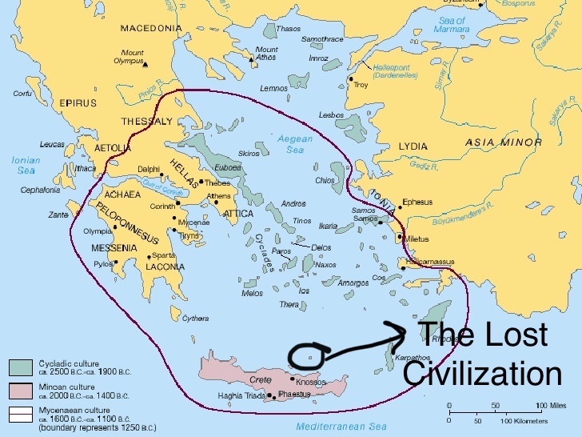
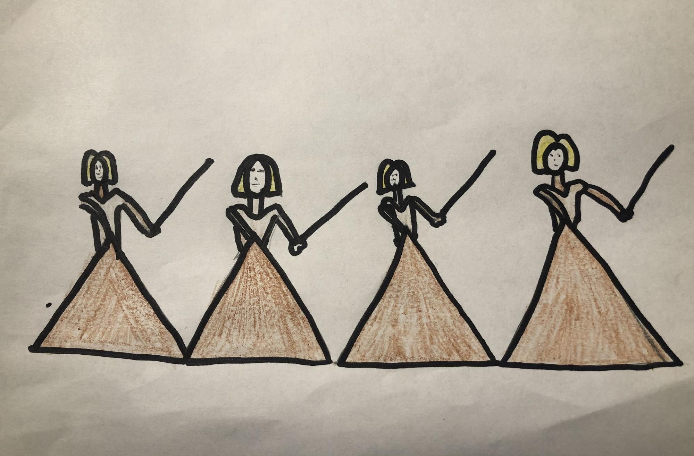
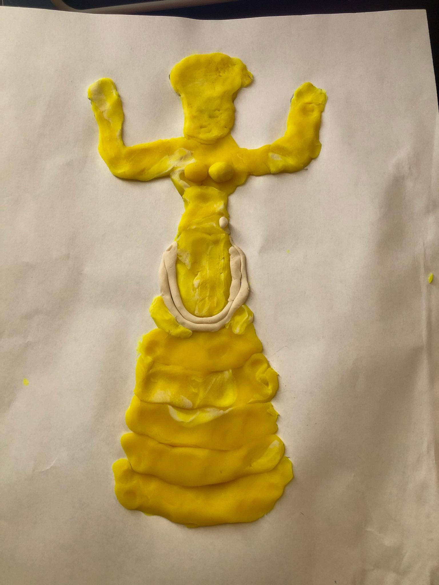
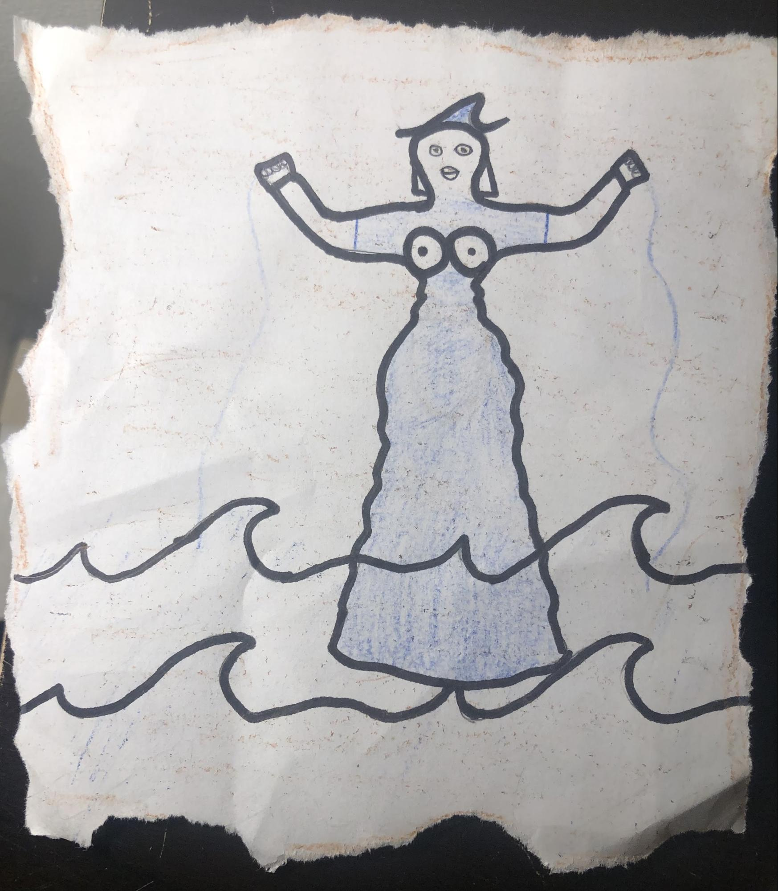
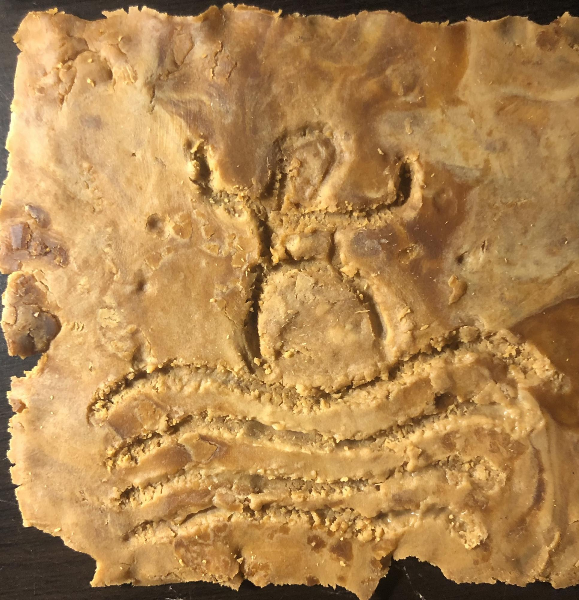
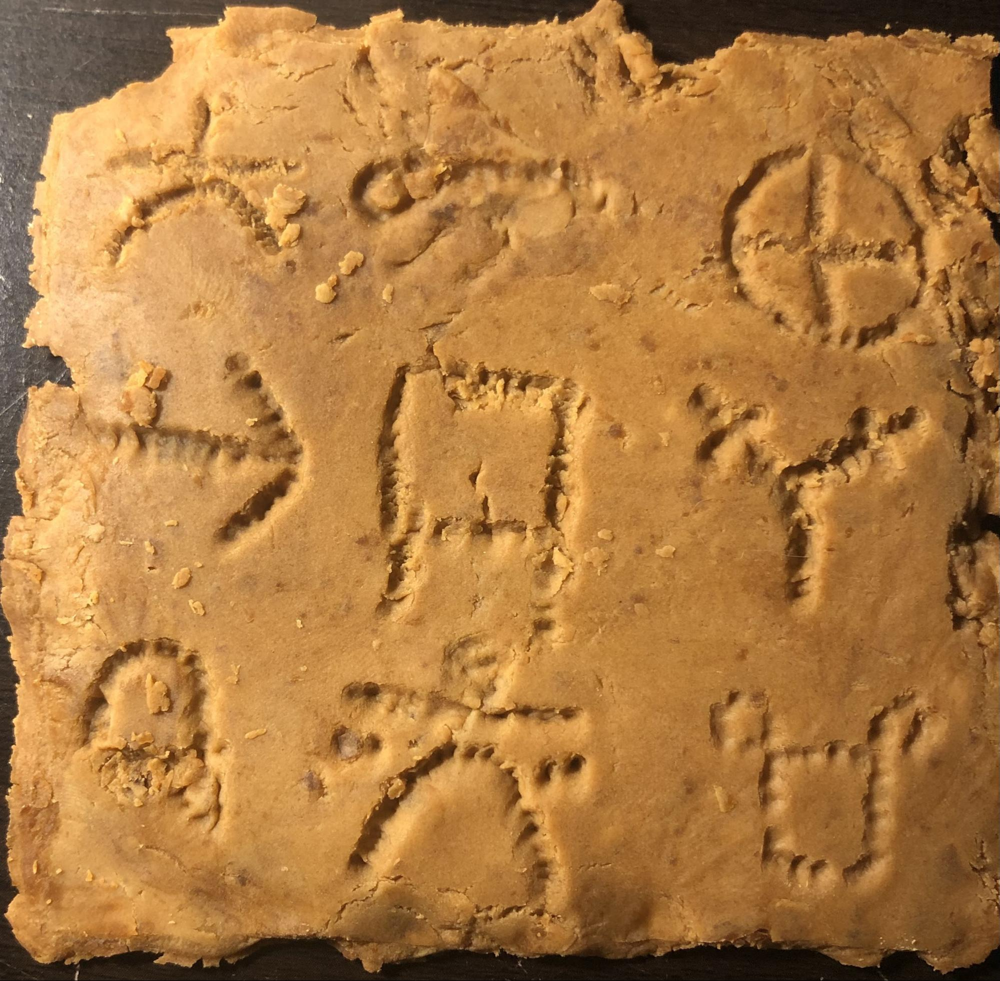
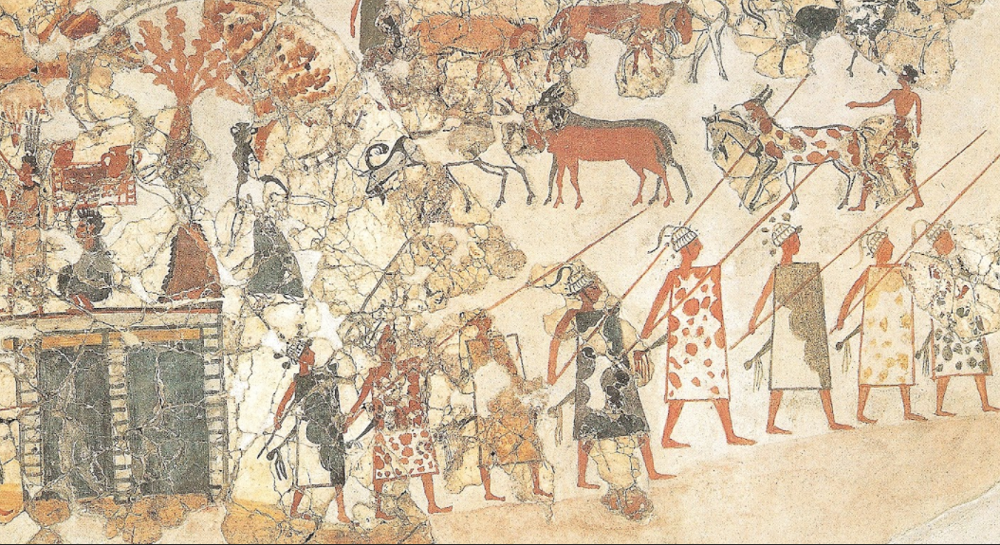

Introduction
Discovery, Dec 7, 1950
The Lost Civilization was found on a small island and was scavenged in the mid-1800s. We found some artifacts and paintings describing their religion, writing system, and political structure. Archeologists determined that this was a civilization because not only did they have their own writing system, but they were active in trading and had a militia. Evidence shows the everyday life of the Lostians as well as their fall due to a neighboring and powerful civilization.
Political
Political Structure, Dec 7, 1950
After long deliberation between archeologists, we have concluded that this artwork represents women soldiers. While some may think that this artwork demonstrates women with a nice dress, it actually represents a triangular shield to protect themselves. They are also holding up weapons.
The Lost civilization had a chief that kept order in the civilization. This is evident because of the weapons seen in the painting. Due to the small population, every citizen took arms when needed. The chief prepared a militia for emergencies. They trained because they feared being conquered since they were such a small island.
Trade
Merchandise and Goods, Dec 7, 1950
Lostians traded with sea people nearby such as the Minoans. This is evident because we found some artifacts from the Minoans. Ulu Burun was a famous cargo ship that also contained the woman sea god artifact from the Lostians.
Religion
Faith and Rituals, Dec 7, 1950
Room A of the Lostian archaeological site was a ritual room. We found paintings of a woman sea god as well as artifacts in the other places of the civilization. This demonstrates that the Lostians worshiped a sea god since they were sea people and spent the majority of time on the sea. These paintings and artifacts were found not only in the ritual room but many other places in the civilization such as their homes.
Writing
Language and Writing System, Dec 7, 1950
 Their writing system is Linear C. Linear C was translated by historians and we noticed that this system of writing has some of the symbols found in Linear A from the Minoans and Linear B from the Mycenaeans. We also found that they used their writing for keeping basic records keeping, accounts, and inventories. Some clay tablets were found in the ritual room, therefore we can predict that they were used to worship the sea god
The Fall Of the Lost Civilization
The End, Dec 7, 1850
Although the Lostians had a militia, they were conquered by the Mycenaeans. They defended themselves with their weapons and armor, but they were brutally defeated and outnumbered by the powerful Mayceneans. Overall the Lostians inhabited a small island in the middle of the sea. They were considered sea people because they worshipped a woman sea god and spent most of their time in the sea. Their trade with neighboring civilizations led to their expansion but resulted in their fall. This small population was ultimately conquered by the Mycenaeans